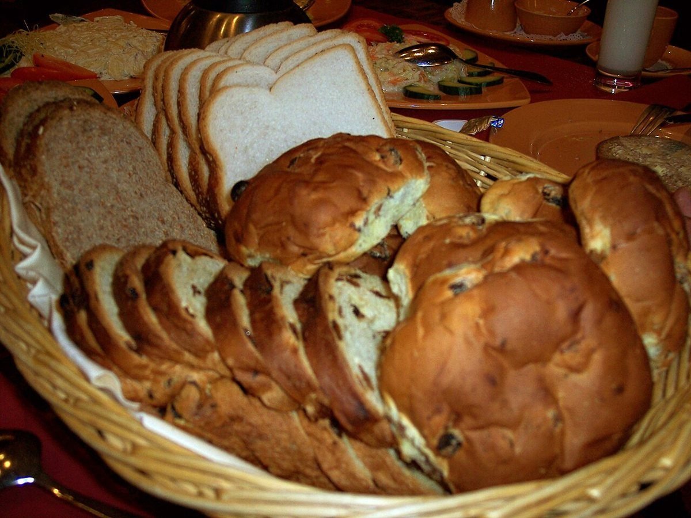

ベーカリー / 沖縄県島尻郡八重瀬町
teベーカリー「te」のご案内
沖縄県島尻郡八重瀬町にあるベーカリー「te」のご案内ページです。営業時間やメニューなど、詳しいことは準備中。まずはInstagramをのぞいてみてください。
 No.2
No.2制作側の連想
InstagramのIDの数字「1153」から
お店のInstagramのIDは「te.1153」です。この数字の意味や由来は分かりません。制作側は「1153」が素数であることに気づき、粉をふるう「ふるい」と、数をふるい分ける「エラトステネスのふるい」を重ねて、このサイトを組み立てました。制作側の連想で、お店の理念・由来とは無関係です。
ふるい分けの図
1から120まで、ふるいにかけてみる。
倍数を消していくと、素数だけが残ります。消えた数字の下の小さな数は、最初に割り切れた素数です。
- 1
- 2
- 3
- 4
2 - 5
- 6
2 - 7
- 8
2 - 9
3 - 10
2 - 11
- 12
2 - 13
- 14
2 - 15
3 - 16
2 - 17
- 18
2 - 19
- 20
2 - 21
3 - 22
2 - 23
- 24
2 - 25
5 - 26
2 - 27
3 - 28
2 - 29
- 30
2 - 31
- 32
2 - 33
3 - 34
2 - 35
5 - 36
2 - 37
- 38
2 - 39
3 - 40
2 - 41
- 42
2 - 43
- 44
2 - 45
3 - 46
2 - 47
- 48
2 - 49
7 - 50
2 - 51
3 - 52
2 - 53
- 54
2 - 55
5 - 56
2 - 57
3 - 58
2 - 59
- 60
2 - 61
- 62
2 - 63
3 - 64
2 - 65
5 - 66
2 - 67
- 68
2 - 69
3 - 70
2 - 71
- 72
2 - 73
- 74
2 - 75
3 - 76
2 - 77
7 - 78
2 - 79
- 80
2 - 81
3 - 82
2 - 83
- 84
2 - 85
5 - 86
2 - 87
3 - 88
2 - 89
- 90
2 - 91
7 - 92
2 - 93
3 - 94
2 - 95
5 - 96
2 - 97
- 98
2 - 99
3 - 100
2 - 101
- 102
2 - 103
- 104
2 - 105
3 - 106
2 - 107
- 108
2 - 109
- 110
2 - 111
3 - 112
2 - 113
- 114
2 - 115
5 - 116
2 - 117
3 - 118
2 - 119
7 - 120
2
では、1153は?
√1153は約33.9なので、31以下の素数で割ってみれば十分です。結果は下の表のとおり。どの目にも引っかからず、1153はふるいに残ります。
| 篩の目 | 割り算 | 結果 |
|---|---|---|
| 2 | 1153 = 2 × 576 + 1 | 割り切れない(余り 1) |
| 3 | 1153 = 3 × 384 + 1 | 割り切れない(余り 1) |
| 5 | 1153 = 5 × 230 + 3 | 割り切れない(余り 3) |
| 7 | 1153 = 7 × 164 + 5 | 割り切れない(余り 5) |
| 11 | 1153 = 11 × 104 + 9 | 割り切れない(余り 9) |
| 13 | 1153 = 13 × 88 + 9 | 割り切れない(余り 9) |
| 17 | 1153 = 17 × 67 + 14 | 割り切れない(余り 14) |
| 19 | 1153 = 19 × 60 + 13 | 割り切れない(余り 13) |
| 23 | 1153 = 23 × 50 + 3 | 割り切れない(余り 3) |
| 29 | 1153 = 29 × 39 + 22 | 割り切れない(余り 22) |
| 31 | 1153 = 31 × 37 + 6 | 割り切れない(余り 6) |
素数番号の棚(イメージ)
2、3、5、7、11、13。番号つきで並べてみる。
写真は八重瀬町やお店のものではありません。国外・撮影地不明のフリー素材を、素数の番号で並べたイメージです。
 No.3
No.3 No.5
No.5
No.7 No.11
No.11 No.13
No.13 No.17
No.17ご案内
お店のこと(確認できたものだけ)
| 所在地 | 〒901-0512 沖縄県島尻郡八重瀬町具志頭59-1 |
|---|---|
| 電話 | 080-9543-6548 |
| 営業時間 | 準備中 |
| 定休日 | 準備中 |
| ご予約 | 準備中 |
| 駐車場 | 準備中 |
| SNS | Instagram @te.1153 |